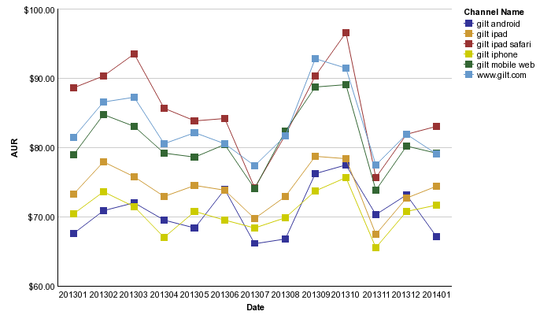

KYLE! -->
OAFE
Open App From Email
Install app redirects you to the app store
X closes the banner for 2 weeks
Open To App redirects you to the iPhone app
You can use the mobile-web for a minute after you are redirected
And, you can manage your preference
but why?
why are you doing this?!
You're driving traffic away from mobile web!
We have a hypothesis
Average Unit Revenue
Average Unit Revenue
Green(Top): MW, full web, iPad Safari
Red(Bottom): native apps
Green ~20% higher than Red
Links can hit the green channels. Links can't hit the apps.
BUT
The iPhone App converts 34% more than mobile web.
Hypothesis
If we can redirect more of the gilt-mobile-web traffic to the iPhone app, we'll increase revenue for Gilt overall.
Data
Total Events:
120,573
Dismissed Banner:
61,901
51.34%
Tapped "Open to app":
48,009
39.82%
Tapped "Install app":
10,663
8.84%
Too early to be conclusive but we are definitely driving more traffic to the iPhone app.
Possible next steps:
Always redirect from a link?
Detect whether app is installed
Advertise it
OAFE was created by
Randy Gretz
CBarr
Chris Gonzalez
Yon
Greg
Bye!